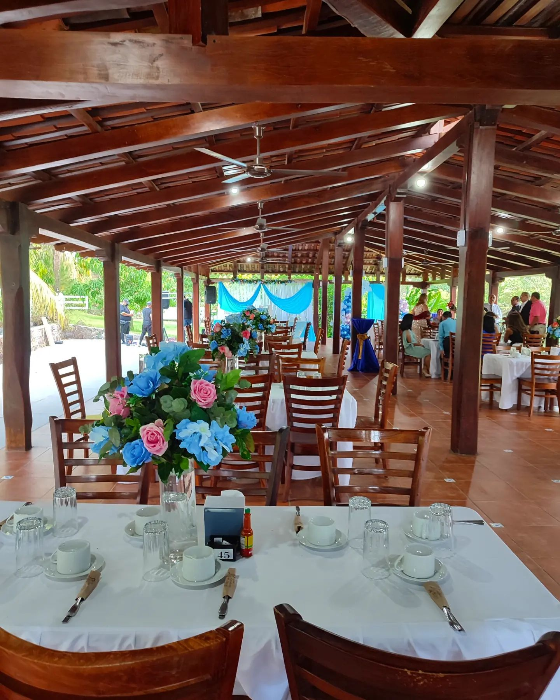
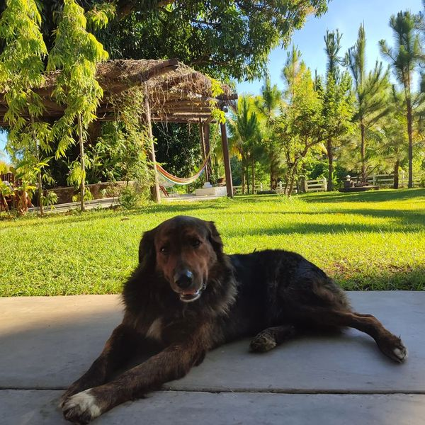

Los lechones de lucia es un restaurante, hotel y un lugar ideal para realizar eventos en familia o amigos en el que puedes disfrutar de una buena comida, ambiente y un servicio excelente. Este restaurante queda ubicado en carretera a Suchitoto km 40 Suchitoto, El Salvador. Los días que está abierto son sábado y domingo desde las 7:00 am hasta las 7:00 pm
Calocho es un perro de raza mestiza y muy adorable convirtiendolo en la mascota principal de la finca, es muy querido para el personal y para los visitantes haciendolo importante para todos ya que las personas con mucha frecuencia deciden tomarse fotos con el o darle caricias.
